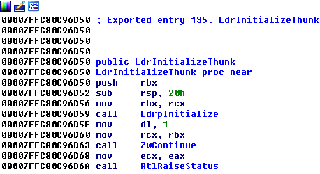

Injection Every process starts when the operating system transfers control from kernel mode to user mode by calling ntdll!LdrInitializeThunk. From this moment ntdll is responsible for initializing the process (initializing globals, loading imports, etc.) and eventually transferring control to the executed program’s main function.

The process is in such an infant stage that the only loaded modules are ntdll.dll and the executable (NS.exe).

Ntdll doesn’t waste time and starts initializing the process, when most of the initialization happens in ntdll!LdrpInitializeProcess.

Normally the first DLL that would be loaded would be kernel32.dll.


But if Application Verifier is on, ntdll!LdrpInitializeProcess calls ntdll!AVrfInitializeVerifier which causes our verifier provider DLL to get loaded just before loading kernel32.


Loading at such an early stage, before any other system dll, gives us absolute control over the process.

Once our DLL has been loaded by ntdll, our DllMain would be called and we are free to do as we wish inside the victim process.
static BOOL main_DllMainProcessAttach(VOID)
{
DOUBLEAGENT_STATUS eStatus = DOUBLEAGENT_STATUS_INVALID_VALUE;
/*
**************************************************************************
Enter Your Code Here
**************************************************************************
*/
/* Succeeded */
DOUBLEAGENT_SET(eStatus, DOUBLEAGENT_STATUS_SUCCESS);
/* Returns status */
return FALSE != DOUBLEAGENT_SUCCESS(eStatus);
}